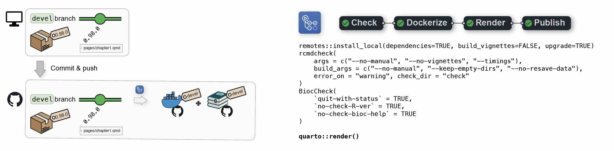
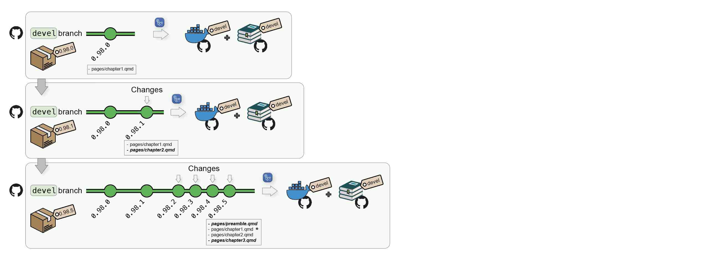
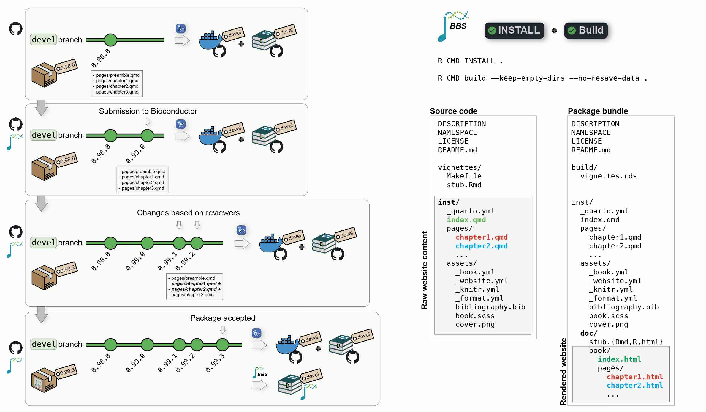
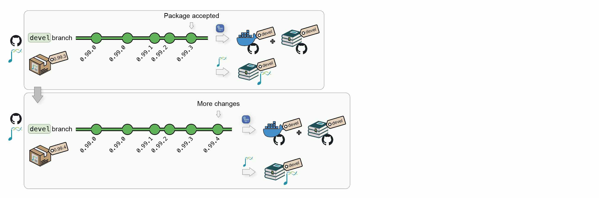
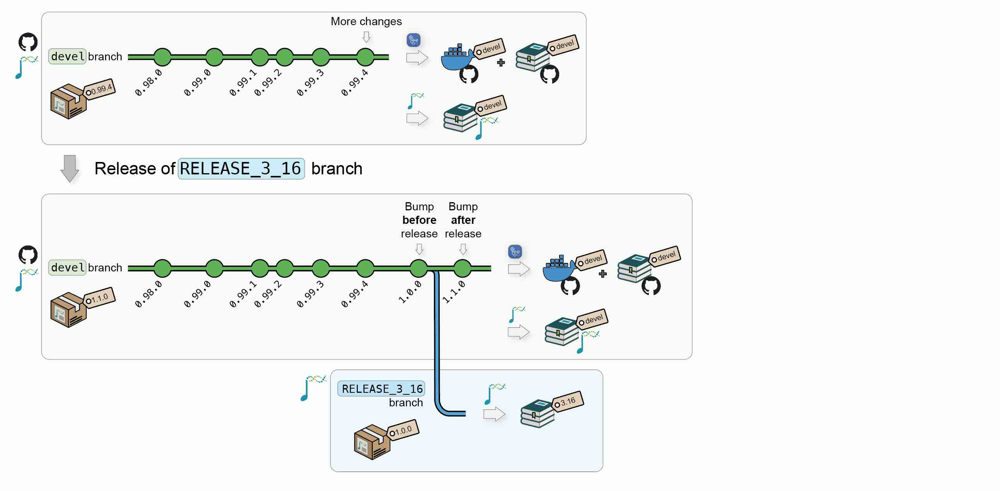
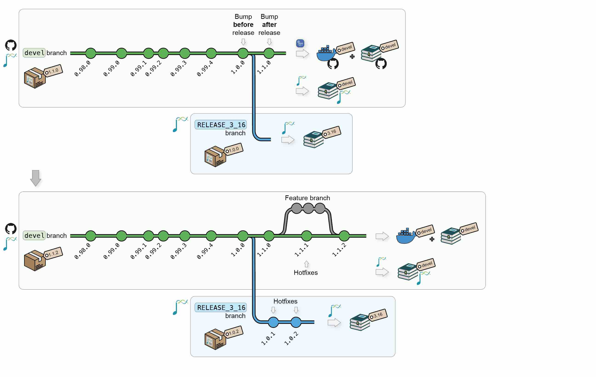
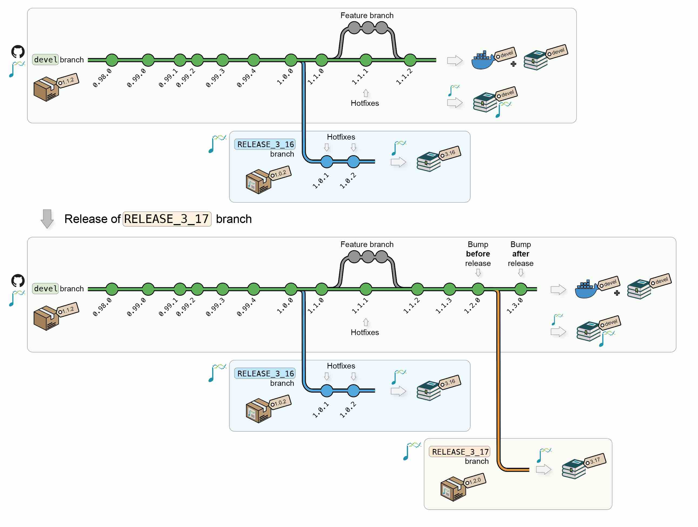

Sys.getenv("BIOCONDUCTOR_DOCKER_VERSION")
## [1] "3.15.27"
2 BiocBook versioning system
Important points
- Any package built using the {
BiocBook} package is itself a {BiocBook}-based package; - As such, it follows the release schedule from
Bioconducor; - The
pages/folder contains a number of pages which are rendered as a website using Quarto; - The name of the branch (
develorRELEASE_X_Y) is crucial, as it is used to select a Bioconductor version to 1) build a Docker image for the {BiocBook}-based package and 2) render theBiocBookwebsite.
2.1 Continuous Integration and Continuous Delivery
2.1.1 From local to Github
When pushing a {BiocBook}-based package from a local devel branch to Github, (e.g. when writing new articles), two jobs are automatically triggered from a single Github Actions workflow:
- First, a Docker image will be created to build the {
BiocBook} package against the Bioconductordevelbranch and push the resulting image toghcr.io/<github_user>/<package_name>:devel; - Then, this image will be used to render the
BiocBookwebsite and deploy it tohttps://<github_user>.github.io/<package_name>/devel/

Additional commits on the devel branch will trigger regeneration of the devel Docker image and the online book devel version.

2.1.2 Package submission to Bioconductor
Submission to Biconductor can follow the same reviewing process as other standard packages.
- The author submits a book package to
Bioconductor/Contributions; - Once review starts, the package gets tested by Bioconductor’s Single Package Builder (SPB);
- The author pushes changes to its Github repository; this will update the
develDocker image and the online bookdevelversion; - Regularly, the author bumps versions and push to Bioconductor’s
upstreambranch to trigger a new SPB test run; - Once the SPB returns no error/warnings, the package may be accepted;
- When a book package is accepted, it starts being regularly built by the Bioconductor Build System (BBS).
- The BBS build automatically renders the book and deploys it online.

At all time, the author’s local devel branch should be synchronized with its Github remote origin as well as the Bioconductor upstream remote.
- Any commit pushed to the remote Github
originremote will trigger a new Github Actions workflow and regenerate thedevelDocker image and the online book served by Github. - Any commit pushed to the remote Bioconductor
upstreamremote will result in a new build by the BBS and an update of the Bioconductor’s hosted book.

2.1.3 New Bioconductor releases
When Bioconductor releases a version X.Y, the core team will automatically create a new upstream:<package_name>@RELEASE_X_Y. This will automatically trigger new builds of the Bioconductor’s hosted book against the new release.
When this occurs, the upstream branch can also be pulled to origin:<package_name>@RELEASE_X_Y to:
- Create a Docker image @
ghcr.io/<github_user>/<package_name>:RELEASE_X_Y, with the book package installed using BioconductorX.Y; - Publish the book website to
https://<github_user>.github.io/<package_name>/X.Y/, using packages from BioconductorX.Y.

Note
A {BiocBook}-based package can follow its own release life cycle if the autor does not intend to submit it to Bioconductor.
If the author of a {BiocBook}-based package intends to submit this package/book/website to Bioconductor, the Bioconductor submission and release life cycle:
- When developing a {
BiocBook}-based package (at the submission and during review), the package version should be between0.99.0and1.0.0. - Once the submission is accepted and Bioconductor releases a new version
X.Y, the {BiocBook}-based package version will automatically be bumped to1.0.0in Bioconductor releaseX.Yand to1.1.0in the continuing Bioconductordevel.
2.1.4 Updates
After new releases, updates and/or hot fixes can still made, both on the latest Bioconductor release and on the devel branch. New commits will automatically trigger the regeneration of the Docker image and the online book for the modified branch(es).

Additional Bioconductor releases will generate new versions of the Docker image and of the online book.

2.2 Access to versioned Docker and online book
2.2.1 Docker images versioning
The different versions of a BiocBook Docker image are availabed at the following URL:
ghcr.io/<github_user>/<package_name>
For example, for this package ({BiocBookDemo}), the following Docker image versions are available:
2.2.2 Website versioning
The different versions of a BiocBook website are hosted at the following URL:
https://<github_user>.github.io/<package_name>/<version>
For example, for this package ({BiocBookDemo}), the following website versions are available:
2.3 Does this really work?
The BIOCONDUCTOR_DOCKER_VERSION variable is set in all Bioconductor Docker images. For instance, this version of the BiocBookDemo package online book relies on:
Tip
Note that this variable will always match the X.Y version returned by BiocVersion used to render the online book.
packageVersion("BiocVersion")
## [1] '3.15.2'2.4 So what packages can I use?
Any package that has been released in the Bioconductor version you are using (in this book version, this is 3.15.2).
The BiocBaseUtils package is available in Bioconductor since 3.16, while the BiocHail package was only made available in 3.17. CuratedAtlasQueryR has recently been accepted in 3.18 (current devel, on Fri Sep 29 09:26:18 2023). Let’s check this!
packageVersion("BiocVersion")
## [1] '3.15.2'
BiocManager::available("BiocBaseUtils")
## character(0)
BiocManager::available("BiocHail")
## character(0)
BiocManager::available("CuratedAtlasQueryR")
## character(0)